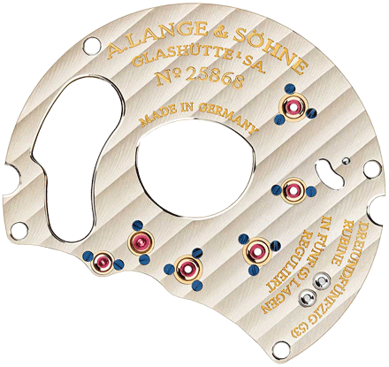
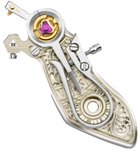
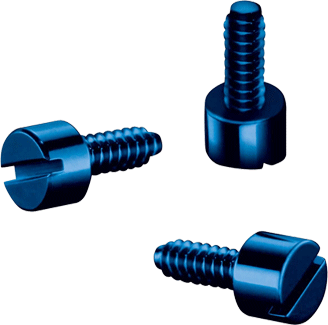
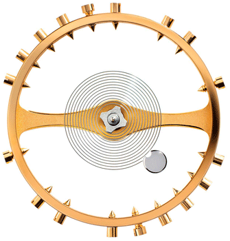
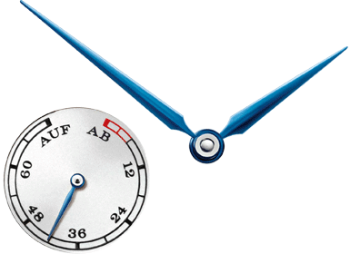
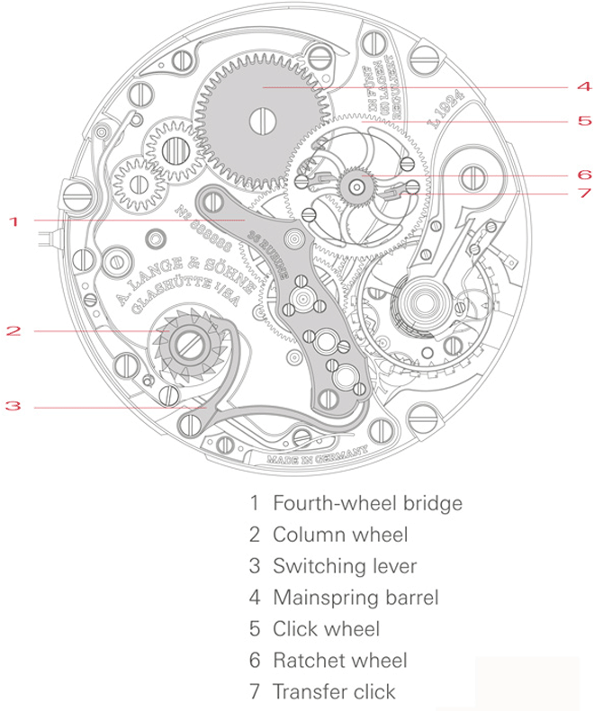
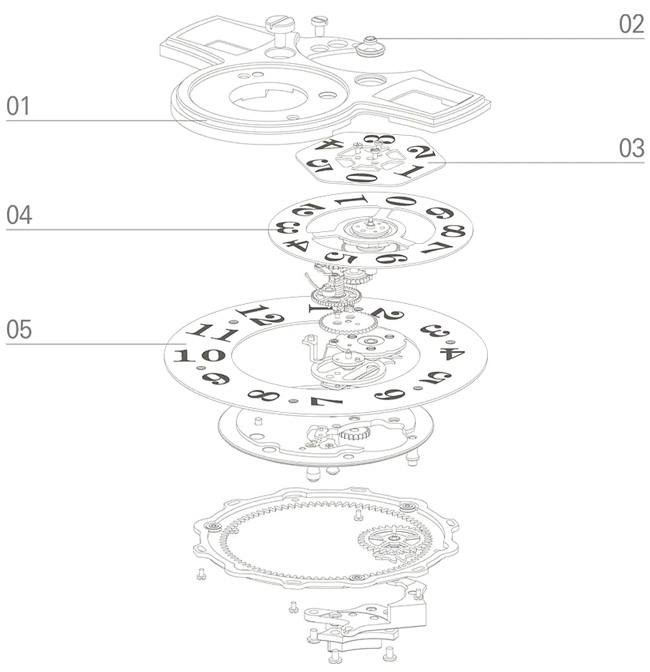

elements
"Perfection with a personality"
-

Three-quarter plate
The three-quarter plate is one of the most important traditional elements of A. Lange & Söhne watches. It was introduced by Ferdinand A. Lange in 1864 and since then has established itself as a characteristic feature of watchmaking in Glashütte. The three-quarter plate accommodates the bearings of the going train.
-

Hand-engraved balance cock and whiplash spring
The engraving on the balance cock is the artisanal fingerprint that makes each Lange watch one of a kind. The small part is embellished with a floral pattern free-hand by a master engraver. A whiplash spring with a lateral micrometer screw is another typical feature of the movement.
-

Blued screws
During the final assembly procedure, the first-pass fixture screws are replaced with flawless, thermally blued screws. Their characteristic hue is achieved by slowly heating them to about 300 degrees Celsius. This process coats the steel with an extremely thin layer of magnetite (Fe3O4); the cornflower blue glimmer is due to interference phenomena.
-

Screw balance
A classic screw balance defines the rate of many Lange watches. Four of the screws are adjustable. The watch ticks slightly faster when they are screwed in and somewhat slower when they are backed out.
-

UP/DOWN power-reserve indicator
The dial also belongs to the suite of classic elements. The form of the power-reserve indicator, with the inscriptions “AUF” (UP) for fully wound and “AB” M164(DOWN) for fully unwound, is an A. Lange & Söhne tradition. Blued steel hands as well as black Arabic numerals and the very crisp railway-track minute scale assure outstanding legibility.
-
blued steel hands
During the final assembly procedure, the first-pass fixture screws are replaced with flawless, thermally blued screws. Their characteristic hue is achieved by slowly heating them to about 300 degrees Celsius. This process coats the steel with an extremely thin layer of magnetite (Fe3O4); the cornflower blue glimmer is due to interference phenomena.
-
movement
During the final assembly procedure, the first-pass fixture screws are replaced with flawless, thermally blued screws. Their characteristic hue is achieved by slowly heating them to about 300 degrees Celsius. This process coats the steel with an extremely thin layer of magnetite (Fe3O4); the cornflower blue glimmer is due to interference phenomena. During the final assembly procedure, the first-pass fixture screws are replaced with flawless, thermally blued screws.